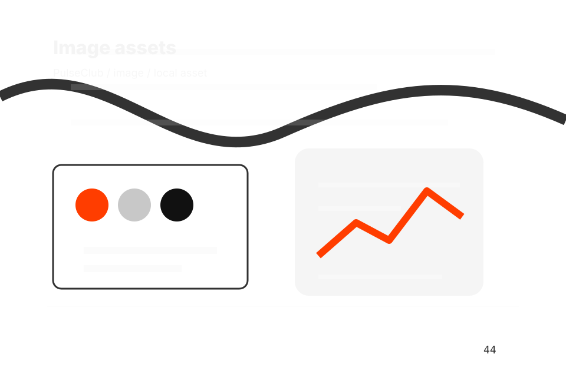
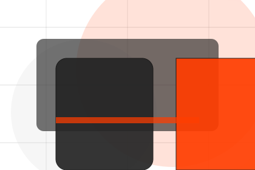
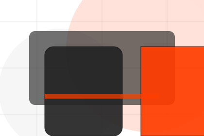
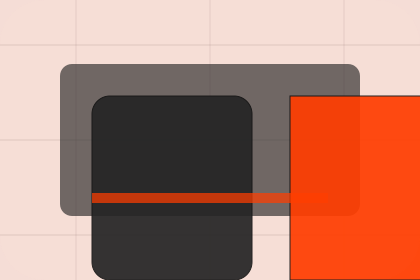

Home / 01
Pulse
A fitness site with athlete-scale hero, program cards, coach proof, schedule filters, and membership CTAs
Home opens as a clear sports decision hub: what Pulse offers, who it helps, why it matters, and which route to take first.
The first screen combines positioning, proof, primary action, and fast internal navigation, so people can act immediately or compare the rest of the home route with context.
Sports scopeCompare optionsRequest advice

Site atlas
Every route through Pulse
This homepage is the working index for sports, fitness & recreation: it explains the offer, points to every deeper page, and keeps the final action visible without making the visitor hunt.
A fitness site with athlete-scale hero, program cards, coach proof, schedule filters, and membership CTAs. The page links problem, promise, services, process, proof, questions, support, legal routes, and conversion paths into one clear decision map.
Club
Open the club route for philosophy, community, facilities so sports, fitness & recreation visitors can compare context, proof, and next steps.
Open ClubPrograms
Open the programs route for beginner, performance, recovery so sports, fitness & recreation visitors can compare context, proof, and next steps.
Open ProgramsClasses
Open the classes route for group, private, online so sports, fitness & recreation visitors can compare context, proof, and next steps.
Open ClassesCoaches
Open the coaches route for team, qualifications, specialisms so sports, fitness & recreation visitors can compare context, proof, and next steps.
Open CoachesResults
Open the results route for transformations, stories, metrics so sports, fitness & recreation visitors can compare context, proof, and next steps.
Open ResultsPricing
Open the pricing route for memberships, packages, dropin so sports, fitness & recreation visitors can compare context, proof, and next steps.
Open PricingSchedule
Open the schedule route for timetable, days, times so sports, fitness & recreation visitors can compare context, proof, and next steps.
Open ScheduleFAQ
Open the faq route for level, equipment, injuries so sports, fitness & recreation visitors can compare context, proof, and next steps.
Open FAQContact
Open the contact route for trial, membership, phone so sports, fitness & recreation visitors can compare context, proof, and next steps.
Open ContactAsset System
Review the local assets, icons, OG images, and static handoff materials used by Pulse.
Open Asset SystemSitemap
Use the full sitemap to recover any route and verify the whole Pulse structure.
Open SitemapPrivacy
Read the privacy route before sending personal details through the static form.
Open PrivacyCookies
Manage consent and understand the privacy-safe analytics approach.
Open Cookies
Athletic product-program system
Asset SystemSitemapPrivacyCookiesTermsAccessibilityThanks404 recovery
Home / 02
Goal
Goal adds professional context to the home route, using the athletic product-program system structure to support progress and belonging before visitors choose a next step.
Pulse uses performance program cards and focused copy to make the decision easier to scan, aligning the section with progress and belonging rather than filling space.
Open ClubPulse structures goal around context, judgment, and a clear next route so visitors can compare the block quickly before they join a class.
Join ClassHome / 04
Promise
Promise defines the better state Pulse is built to create, with enough detail to make the promise believable.
A fitness site with athlete-scale hero, program cards, coach proof, schedule filters, and membership CTAs. The section grounds that direction in concrete benefits, visible tradeoffs, and a next route visitors can use when the promise feels relevant.
Open ClassesBetter State
Promise defines what becomes clearer, easier, or safer when Pulse is the chosen route.
Practical Gain
The benefit is tied to progress and belonging, not a vague quality claim.
Proof Route
Visitors get a linked path to compare the promise against services, standards, or examples.
Home / 05
Programs
Programs explains the practical scope, best-fit situations, and expected outcome so sports visitors can compare options without decoding jargon.
The section keeps the offer concrete: what is included, who it is best for, what decision it supports, and which linked route gives the deeper detail.
Open CoachesWho should use programs and when it belongs in the home journey.
The practical benefit visitors should expect after choosing this route.
Where to compare details, pricing, support, or contact options before committing.
Home / 06
Classes
Classes adds professional context to the home route, using the athletic product-program system structure to support progress and belonging before visitors choose a next step.
Pulse uses performance program cards and focused copy to make the decision easier to scan, aligning the section with progress and belonging rather than filling space.
Open Results- 01
Context
Classes gives the page a specific angle instead of repeating the navigation label.
- 02
Judgment
The performance program cards show what to compare, what to avoid, and what matters most for sports, fitness & recreation visitors.
- 03
Direction
The final cue points to a useful internal route so the section keeps the journey moving.
Home / 07
Results
Results shows what changes after the work: clearer decisions, visible progress, and proof points that connect the offer to real outcomes.
The layout connects before-and-after thinking with measured outcomes, making the result easy to scan without promising what the business cannot guarantee.
Open ResultsThe uncertainty, delay, or missed opportunity visitors bring into results.
The clearer, safer, or more valuable state Pulse is designed to support.
The visible cue that connects results to a believable decision, not a loose claim.
Home / 08
Community
Community adds professional context to the home route, using the athletic product-program system structure to support progress and belonging before visitors choose a next step.
Pulse uses performance program cards and focused copy to make the decision easier to scan, aligning the section with progress and belonging rather than filling space.
Open Schedule
Context
Community gives the page a specific angle instead of repeating the navigation label.
Home / 09
Questions
Questions handles buying doubts directly so visitors can understand timing, fit, limits, and the safest next step.
Answers are short by design: enough to remove hesitation, not so much that the page turns into documentation before the visitor can act.
Open ContactQuestion
Questions gives the page a specific angle instead of repeating the navigation label.
Answer
The performance program cards show what to compare, what to avoid, and what matters most for sports, fitness & recreation visitors.

Next Step
The final cue points to a useful internal route so the section keeps the journey moving.
What happens first?
Pulse starts with a focused intake so the recommendation matches the visitor's context, risk, timing, and readiness.
How is scope kept clear?
Each route explains inclusions, exclusions, documents, timing, and the decision points that affect final delivery.
How is this site different?
The theme uses athletic product-program system, performance program cards, and timetable filter, membership toggle, coach selector rather than a shared template rhythm.
Notes
Fitness guidance should be adapted to health status and professional advice where needed.
Home / 10
Join Class
Pulse closes the home route with a clear action, a quick reminder of the value, and a low-friction way to join a class.
Visitors who are ready can use the primary action. Visitors who are still comparing can scan the section links, proof, and support routes before they join a class.
Join ClassThe final block keeps the choice simple: act now, compare one more proof route, or send enough detail for a focused response.
Join Classprogress and belonging
Join Class
A fitness site with athlete-scale hero, program cards, coach proof, schedule filters, and membership CTAs. Home ends with a direct path to join a class, plus enough context for visitors who still need to compare.

Join Class